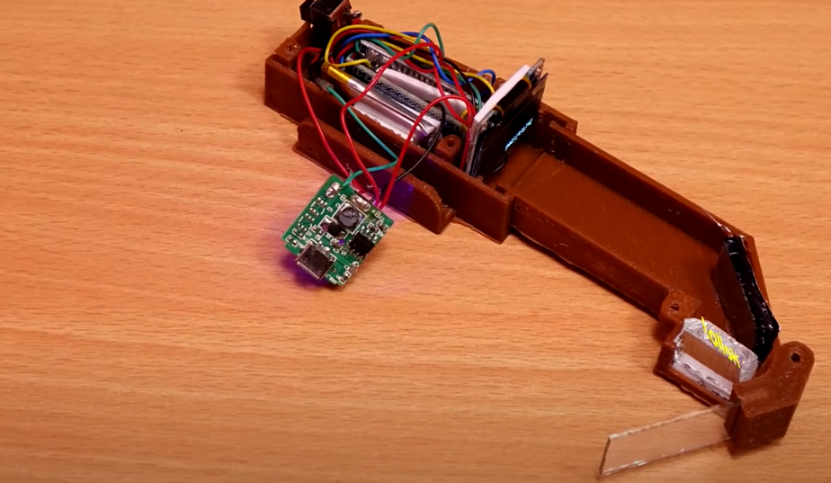

Revolutionizing Rider Safety: A Smart Helmet with Augmented Reality and Accident Detection
Imagine riding your motorcycle with all the essential information seamlessly displayed in your line of sight, without ever having to take your eyes off the road. Introducing our innovative smart helmet, equipped with a heads-up display (HUD) enhanced with Augmented Reality (AR), and an advanced accident detection system to keep you safe on every journey.

Figure 1: Futuristic Diagram of the Smart Helmet System
Prerequisites
Hardware Components:
- Raspberry Pi (any model with GPIO pins and display capability)
- Pressure Sensor or PIR Sensor connected to GPIO pin 7
- GPS Module connected via serial port (e.g., /dev/ttyAMA0)
- HUD Display connected to Raspberry Pi (e.g., HDMI, SPI, or other compatible displays)
Software Libraries:
- Python 3 installed on Raspberry Pi
Install necessary Python libraries using pip:
pip install RPi.GPIO requests pygame pillow pyserial pynmea2API Keys and Credentials:
- Google Maps Static API Key: Obtain from the Google Cloud Console.
- SMS Service Credentials: The example uses TextLocal. Replace with your SMS service provider if different.
Why a Smart Helmet?
Motorcycle riding offers unparalleled freedom and convenience, but it also comes with significant risks. Accidents can result in severe injuries or even fatalities, especially when riders are not adequately protected. Traditional helmets provide essential protection by reducing the impact of collisions, but they lack advanced features that could further enhance rider safety and convenience.
Our project aims to bridge this gap by developing a smart helmet integrated with a heads-up display (HUD) and an accident detection module. This helmet not only ensures that the rider is wearing it before allowing the bike to start but also provides real-time navigation, call notifications, and automatic accident reporting to emergency contacts. By leveraging technologies such as AR, Bluetooth, GPS, and GSM, we have created a comprehensive safety solution for modern riders.
Key Features of the Smart Helmet
1. Heads-Up Display (HUD)
The HUD is a game-changer for motorcycle safety and convenience. Connected to the rider's mobile device via Bluetooth, the HUD displays real-time navigation directions, call notifications, and message alerts directly in the rider's line of sight. By using AR technology, the HUD overlays this information on a transparent glass visor, allowing the rider to stay informed without diverting attention from the road. This reduces the need to check a smartphone or GPS device, minimizing distractions and enhancing safety.
2. Accident Detection
Accidents can happen unexpectedly, and immediate response is crucial. Our helmet is equipped with vibration sensors strategically placed at high-risk points. These sensors continuously monitor the intensity of vibrations experienced by the helmet. If a collision causes vibrations that exceed a predefined threshold, the microcontroller processes the data and sends a signal to the rider's mobile device via Bluetooth. The mobile device then uses GPS to determine the crash location and automatically sends this information to emergency services and predefined contacts through an installed application.
3. Switching on the Bike
The first module ensures that the motorcycle cannot be started unless the rider is wearing the helmet. This is achieved using a pressure sensor embedded in the helmet. When the rider wears the helmet, the pressure sensor detects the applied pressure and sends a signal to the bike's microcontroller via an RF transmitter. If the pressure is sufficient, indicating that the helmet is being worn, the bike will start; otherwise, it remains off.
Implementation: Bringing the Smart Helmet to Life
System Workflow
The smart helmet system operates through three main workflows:
a. Heads-Up Display
As soon as the rider wears the helmet, it connects to the mobile device via Bluetooth. The mobile device checks if the HUD is switched on. If the HUD is active, it sends all relevant data, including current navigation, calls, and message notifications, to the helmet's microcontroller. The microcontroller processes this data and displays it on the HUD, providing the rider with essential information without distractions.
Figure 2(a): Heads Up Display on the Bike
b. Detecting an Accident
When the helmet is worn, the vibration sensor is activated and continuously measures vibration intensity. If the vibration exceeds a set threshold, the microcontroller sends a signal to the mobile device via Bluetooth. The mobile device retrieves the crash location using GPS and sends this information to emergency services and two pre-selected contacts through an installed application.
Figure 2(b): Accident Detection Module
c. Switching on the Bike
The rider wears the helmet, activating the pressure sensor. The sensor sends a high output signal to the microcontroller, which processes the input and transmits it to the bike module via an RF transmitter. The bike module receives the signal through an RF receiver and sends it to its microcontroller. If the pressure sensor output is high, indicating that the helmet is worn, the bike's engine will start; otherwise, it will remain off.
System Requirements
The system is implemented using a combination of hardware and software components. Below is a table outlining the essential components used in the smart helmet:
| Sr. No | Components | Component Name |
|---|---|---|
| 1. | Raspberry Pi | Pi Version 2 |
| 2. | Pressure Sensor | BMP 180 |
| 3. | Vibration Sensor | Vibration Sensor SW420 |
| 4. | Heads-Up Display | 4.5-inch Transparent OLED |
| 5. | Android Device | Google Auto App Installed |
Coding Implementation
Implementing the accident detection, SMS sending, and map display functionalities involves writing Python scripts that interface with the Raspberry Pi's GPIO pins and handle communication with the mobile device. Below is the comprehensive code used in the system:
Complete Python Script for Accident Detection and Map Display
import RPi.GPIO as GPIO
import time
import requests
import pygame
from pygame.locals import *
from PIL import Image
import io
import serial
import pynmea2
# ============================
# Configuration and Setup
# ============================
# GPIO setup
GPIO.setmode(GPIO.BCM)
GPIO_VIB = 7 # GPIO pin connected to the sensor
GPIO.setup(GPIO_VIB, GPIO.IN)
# SMS sending function
def sendSMS(uname, pword, numbers, sender, message):
"""
Sends an SMS using TextLocal API.
Args:
uname (str): Username for TextLocal.
pword (str): Password for TextLocal.
numbers (str): Comma-separated phone numbers.
sender (str): Sender ID.
message (str): Message content.
Returns:
tuple: Response text and status code.
"""
params = {
'uname': uname,
'pword': pword,
'selectednums': numbers,
'message': message,
'from': sender
}
try:
response = requests.post('https://www.textlocal.co.uk/sendsmspost.php', data=params)
return response.text, response.status_code
except Exception as e:
print("Error sending SMS:", e)
return None, None
# GPS reading function
def get_current_location(serial_port='/dev/ttyAMA0', baudrate=9600, timeout=1):
"""
Retrieves the current GPS location.
Args:
serial_port (str): Serial port where GPS module is connected.
baudrate (int): Baud rate for serial communication.
timeout (int): Read timeout in seconds.
Returns:
tuple: Latitude and Longitude as floats. (None, None) if failed.
"""
try:
ser = serial.Serial(serial_port, baudrate, timeout=timeout)
while True:
line = ser.readline().decode('ascii', errors='replace')
if line.startswith('$GPGGA'):
msg = pynmea2.parse(line)
lat = msg.latitude
lon = msg.longitude
ser.close()
return lat, lon
except Exception as e:
print("Error reading GPS data:", e)
return None, None
# Function to fetch map image from Google Maps Static API
def fetch_map_image(api_key, lat, lon, zoom=15, size="640x480", maptype="roadmap", markers=True):
"""
Fetches a static map image from Google Maps.
Args:
api_key (str): Google Maps Static API key.
lat (float): Latitude.
lon (float): Longitude.
zoom (int): Zoom level.
size (str): Image size in pixels (e.g., "640x480").
maptype (str): Type of map (e.g., "roadmap", "satellite").
markers (bool): Whether to add a marker at the location.
Returns:
PIL.Image: Map image. None if failed.
"""
base_url = "https://maps.googleapis.com/maps/api/staticmap?"
params = {
"center": f"{lat},{lon}",
"zoom": zoom,
"size": size,
"maptype": maptype,
"key": api_key
}
if markers:
params["markers"] = f"color:red|{lat},{lon}"
response = requests.get(base_url, params=params)
if response.status_code == 200:
return Image.open(io.BytesIO(response.content))
else:
print("Error fetching map image:", response.status_code)
return None
# Function to display image using Pygame
def display_map(image):
"""
Displays the provided image on the connected display using Pygame.
Args:
image (PIL.Image): Image to display.
"""
pygame.init()
# Convert PIL image to Pygame surface
mode = image.mode
size = image.size
data = image.tobytes()
pygame_image = pygame.image.fromstring(data, size, mode)
# Set up the display
screen = pygame.display.set_mode(size)
pygame.display.set_caption('Map Display')
# Blit the image to the screen
screen.blit(pygame_image, (0, 0))
pygame.display.flip()
# Keep the window open until user closes it
running = True
while running:
for event in pygame.event.get():
if event.type == QUIT:
running = False
# Optional: Add a timeout or additional conditions
time.sleep(0.1)
pygame.quit()
# ============================
# Main Program
# ============================
def main():
# ============================
# User Configuration
# ============================
# SMS credentials and settings
SMS_UNAME = "jasebell@xxxxxxxx" # Replace with your TextLocal username
SMS_PWORD = "xx_password_xx" # Replace with your TextLocal password
SMS_NUMBERS = "447900xxxxxxx" # Replace with recipient phone numbers
SMS_SENDER = "4479" # Replace with your sender ID
# Google Maps API Key
GOOGLE_MAPS_API_KEY = "YOUR_GOOGLE_MAPS_API_KEY" # Replace with your API key
# ============================
# State Variables
# ============================
Current_State = 0
Previous_State = 0
print("Smart Helmet System Initialized. Monitoring for accidents...")
try:
while True:
if GPIO.input(GPIO_VIB) == 1:
Current_State = 0
print("Sensor Ready")
while True:
Current_State = GPIO.input(GPIO_VIB)
if Current_State == 1 and Previous_State == 0:
print("Accident detected!")
# Get current location
lat, lon = get_current_location()
if lat and lon:
print(f"Current Location: Latitude={lat}, Longitude={lon}")
# Prepare SMS message with Google Maps link
sms_message = f"Accident detected at location: https://maps.google.com/?q={lat},{lon}"
# Send SMS notification
response_text, status_code = sendSMS(SMS_UNAME, SMS_PWORD, SMS_NUMBERS, SMS_SENDER, sms_message)
if status_code == 200:
print("SMS sent successfully.")
else:
print(f"Failed to send SMS. Status Code: {status_code}")
# Fetch map image
map_image = fetch_map_image(GOOGLE_MAPS_API_KEY, lat, lon)
if map_image:
print("Map image fetched successfully. Displaying on HUD...")
display_map(map_image)
else:
print("Failed to fetch map image.")
else:
print("Unable to retrieve current location.")
# Send SMS without location
sms_message = "Accident detected, but unable to retrieve location."
sendSMS(SMS_UNAME, SMS_PWORD, SMS_NUMBERS, SMS_SENDER, sms_message)
Previous_State = 1
elif Current_State == 0 and Previous_State == 1:
print("System Ready")
Previous_State = 0
# Wait for 10 milliseconds
time.sleep(0.01)
else:
# Sensor not triggered
time.sleep(0.1)
except KeyboardInterrupt:
print("\nProgram terminated by user.")
finally:
GPIO.cleanup()
print("GPIO cleanup completed.")
if __name__ == "__main__":
main()
This comprehensive script integrates accident detection using a vibration sensor, sends SMS notifications to emergency contacts, and displays a map with the current location on a connected HUD. Ensure to replace the placeholder values with your actual credentials and API keys.
Detailed Explanation
1. Importing Libraries
RPi.GPIO: To interact with the Raspberry Pi's GPIO pins.
time: For handling delays.
requests: To make HTTP requests to APIs.
pygame: For displaying images on the HUD.
PIL (Pillow): To handle image processing.
io: For handling byte streams.
serial: To communicate with the GPS module.
pynmea2: To parse NMEA sentences from the GPS module.
2. GPIO Setup
Sets the GPIO mode to BCM.
Configures GPIO pin 7 as an input pin connected to the sensor (e.g., pressure or PIR sensor).
3. SMS Sending Function (sendSMS)
Parameters:
uname:Your TextLocal username.pword:Your TextLocal password.numbers:Comma-separated list of recipient phone numbers.sender:Sender ID.message:The message content.
Functionality:
- Sends a POST request to TextLocal's SMS API endpoint with the necessary parameters.
- Returns the response text and status code for logging purposes.
4. GPS Reading Function (get_current_location)
Parameters:
serial_port:The serial port where the GPS module is connected (default is /dev/ttyAMA0).baudrate:Communication speed (default is 9600).timeout:Read timeout in seconds.
Functionality:
- Reads NMEA sentences from the GPS module.
- Parses the
$GPGGAsentence to extract latitude and longitude. - Returns the latitude and longitude as floats. If unsuccessful, returns (
None,None).
5. Fetching Map Image (fetch_map_image)
Parameters:
api_key:Your Google Maps Static API key.lat:Latitude.lon:Longitude.zoom:Zoom level of the map.size:Size of the map image in pixels.maptype:Type of map (e.g., roadmap, satellite).markers:Whether to place a marker on the location.
Functionality:
- Constructs the Google Maps Static API URL with the provided parameters.
- Sends a GET request to fetch the map image.
- Returns the image as a
PIL.Imageobject if successful; otherwise, returnsNone.
6. Displaying the Map (display_map)
Parameters:
image:ThePIL.Imageobject to display.
Functionality:
- Initializes Pygame and converts the PIL image to a Pygame surface.
- Sets up the display window with the image size.
- Blits the image onto the screen and updates the display.
- Keeps the window open until the user closes it.
7. Main Program Logic (main)
Configuration:
- Replace the placeholders with your actual SMS service credentials and Google Maps API key.
Flow:
- Initialization: Prints a startup message.
- Monitoring Loop: Continuously monitors the sensor state.
- Accident Handling:
- Location Retrieval: Attempts to get the current GPS location.
- SMS Notification: Sends the SMS to the predefined emergency contacts.
- Map Fetching and Display: Fetches the static map image centered on the current location and displays it on the connected HUD.
- State Management: Updates the state to prevent repeated alerts until the sensor resets.
- Graceful Termination: Handles KeyboardInterrupt (Ctrl+C) to allow the user to terminate the program and cleans up GPIO settings before exiting.
Usage Instructions
Configure Hardware:
- Connect your sensor to GPIO pin 7.
- Connect the GPS module to the designated serial port.
- Ensure the HUD display is properly connected and recognized by the Raspberry Pi.
Update the Script:
- Replace the placeholders in the script with your actual TextLocal credentials and Google Maps API Key.
- Adjust the serial port in
get_current_locationif your GPS module is connected to a different port.
Run the Script:
Make the script executable:
chmod +x smart_helmet.pyExecute the script:
python3 smart_helmet.pyTesting:
Simulate an accident by triggering the sensor. Ensure that:
- An SMS is sent to the emergency contacts with the correct location link.
- The HUD display shows the map centered on your current location.
Additional Considerations
Error Handling:
The script includes basic error handling for SMS sending and GPS reading. You can enhance it further based on specific requirements.
Power Management:
Since this is a helmet project, ensure that the Raspberry Pi and connected peripherals are adequately powered without being bulky.
Real-Time Updates:
For real-time navigation or continuous map updates, consider implementing a more dynamic solution using Google Maps APIs or other mapping services.
Security:
Protect your API keys and credentials. Avoid hardcoding sensitive information in the script for production environments. Consider using environment variables or secure storage solutions.
Optimizations:
- To reduce latency, cache map images or use lower resolution images suitable for the HUD display.
- Implement debounce logic for the sensor to prevent false positives.
This script provides a solid foundation for your smart helmet project, integrating sensor-based accident detection with emergency notifications and location visualization. You can further customize and expand its functionalities based on your specific needs.
Circuit Diagram and Assembly
Setting up the hardware components correctly is crucial for the system's functionality. Below are the steps to assemble the circuit:
- Insert HUD Display into the Breadboard: Start by placing the HUD display onto the breadboard, ensuring it is securely positioned.
- Connect Ground: Using a male-to-female jumper wire, attach the male end to the ground pin on the HUD display. Then, connect the female end to pin 6 on the Raspberry Pi, which is also ground.
- Power the HUD Display: Using another male-to-female jumper wire, connect the 'Vin' pin on the HUD display to pin 1 on the Raspberry Pi. This serves as the power line.
- Skip the 3.3V Pin: Connect the HUD display's pin labeled 'Clk' to pin 23 on the Raspberry Pi using a male-to-female jumper wire.
- Reset Pin: Attach the 'Rst' pin on the HUD display to pin 8 on the Raspberry Pi using a jumper wire.
- Connect DC Pin: Attach the 'DC' pin on the HUD display to pin 10 on the Raspberry Pi using a jumper wire.
- Data Pin Connection: Finally, connect the data pin on the HUD display to pin 19 on the Raspberry Pi using a male-to-female jumper wire.

Circuit Diagram of the Smart Helmet System
Conclusion
The smart helmet project marks a significant advancement in motorcycle safety technology. By ensuring that riders wear the helmet before allowing the bike to start, and by providing real-time navigation and call notifications through the HUD, the helmet minimizes distractions and enhances rider focus on the road. The integrated accident detection module, which automatically notifies emergency services and contacts in the event of a crash, adds an invaluable layer of safety, potentially saving lives by facilitating prompt medical attention.
As urbanization continues to increase motorcycle usage, such innovations are essential in reducing road accidents and improving overall rider safety. The combination of AR-enhanced HUD and smart accident detection paves the way for the future of intelligent headgear, making riding not only safer but also more convenient and connected.